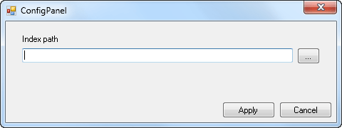
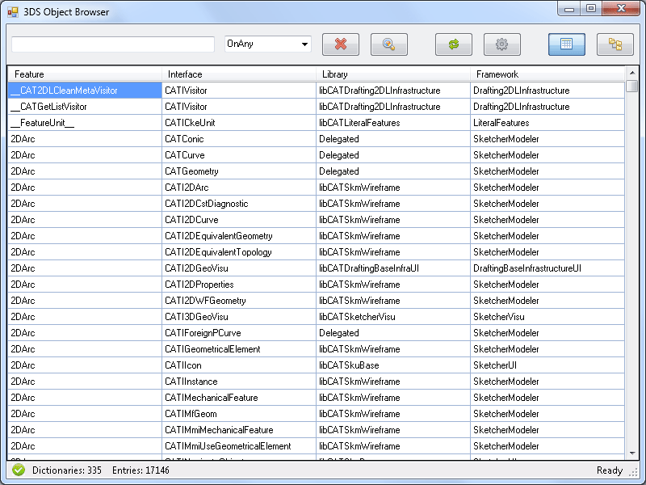
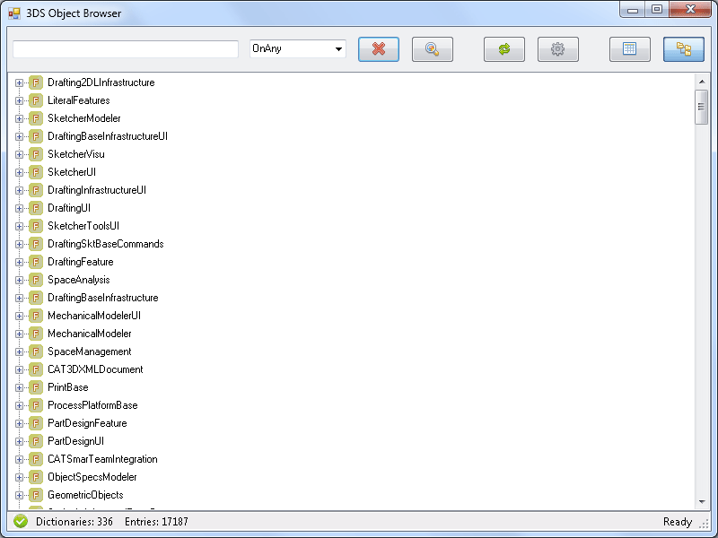
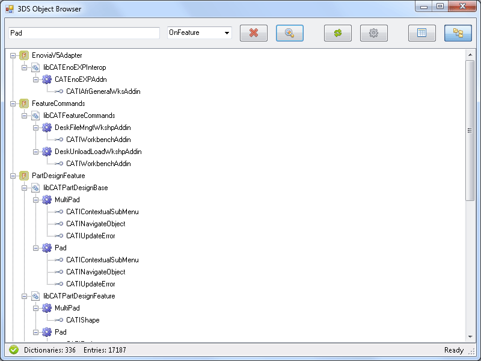
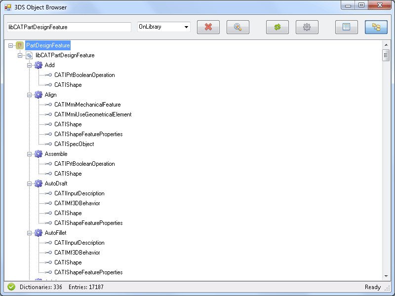

3DS Object Browser |
|
The 3DS Object Browser scans the dictionary files of the frameworks located in the run time views of your workspace and of its prerequisites. It displays the features or objects that implement CAA exposed interfaces, along with the libraries containing the implementation run time code, and the frameworks containing the dictionary files. It provides navigation capabilities and a tree or table display for conveniently arranging the data related to a given feature, interface, library, or framework. |
Before you begin:
|
Open Visual Studio.
Open a workspace as described in Opening a Workspace.
Make sure that the workspace prerequisites are set, or set them as described in Managing Prerequisites.
On the Help menu, click 3DS Object Browser.
If you have already declared the workspace prerequisites including an API documentation index file, the 3DS Object Browser opens.
Otherwise, if the 3DS Object Browser opens empty, the index file used by the 3DS Object Browser is not set. Click .
The Config Panel dialog box opens.

In Index Path, type the path of the index file.
This file is located in the folder where you have installed the API CD-ROM,
which is by default C:\Program Files\Dassault Systemes\B28.
The path to select is C:\Program Files\Dassault Systemes\B28\CAADoc\Doc\generated\refman\visidx.txt.htm.
Click Apply.
The 3DS Object Browser opens.

The 3DS Object Browser includes a toolbar and a window pane which can display a table view and a tree view.
The toolbar includes a text box, a list, and commands.
| Filter | Description |
|---|---|
| OnAny | No filter applied. |
| OnFeature | Search only for features. |
| OnInterface | Search only for interfaces. |
| OnLibrary | Search only for libraries. |
| OnFramework | Search only for frameworks. |
| Icon | Command | Description |
|---|---|---|
| Remove | Empty the text box, reset the filter list to OnAny, and thus display all the dictionary content. | |
| Search | Search for the entered character string and the selected filter. | |
| Refresh | Empty the text box, reset the list to OnAny, and refresh all the dictionary entries, including those you may have created and built, or those coming from frameworks copied into the workspace and built, since the 3DS Object Browser was opened. | |
| Configure | Opens a prompt to set the path of the index file to use. | |
| Table View | Show arranged in this order the features, libraries, interfaces, and frameworks in a table. | |
| Tree View | Show arranged in this order the frameworks, libraries, features, and interfaces. |
Two views of the dictionary files are proposed:
The table view shows, when opening the 3DS Object Browser, or when clicking or , all the lines describing the implementations of an interface found in your workspace framework dictionary files, providing these frameworks are built. It also displays the lines of the dictionary files of the frameworks belonging to your workspace prerequisites, provided these lines describe the implementation of CAA exposed interfaces. These interface implementations are described in a four-column table:
When opening the 3DS Object Browser, the rows are displayed in the dictionary file reading order. You can then sort the table according to the alphabetical order of the data in a given column by clicking the header of this column. Clicking again this column header sorts the table in the reverse alphabetical order.
Double clicking a cell in the table uses the character string in this cell as the searched string and the header of the column as the filter to run a search and display its results. The text box and the filter list are updated accordingly.
Double clicking a framework, a library, a feature, or an interface in the tree uses the name of this entity as the searched string and its type as the filter to run a search and display its results. The text box and the filter list are updated accordingly.
The tree view opens by default as follows.

Opening he PartDesignFeature framework, the libCATPartDesignFeature library, and double clicking the Pad feature displays all the frameworks and libraries in which this Pad feature and all the features containing "pad" in their names, and the CAA exposed interfaces they implement.

In this view, double clicking the libCATPartDesignFeature library displays all the features along with the CAA interfaces they implement in this library.

| Version: 2 [Jul 2017] | Update for V5-6R2018 and Visual Studio 2015 |
| Version: 1 [Jul 2014] | Document created |